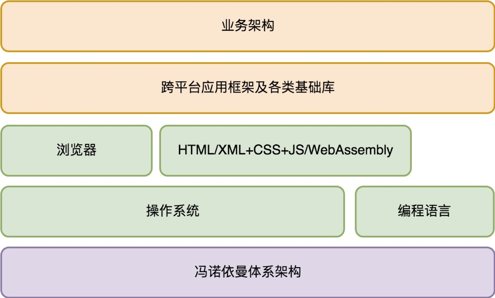
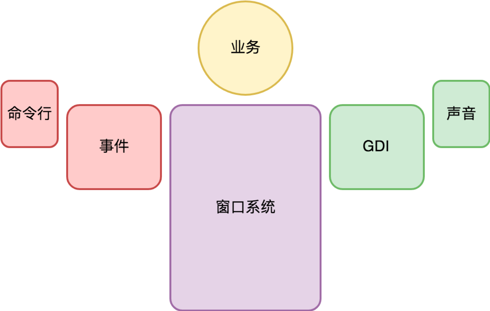

- 00 开篇词 怎样成长为优秀的软件架构师？.md.html
- 01 架构设计的宏观视角.md.html
- 02 大厦基石：无生有，有生万物.md.html
- 03 汇编：编程语言的诞生.md.html
- 04 编程语言的进化.md.html
- 05 思考题解读：如何实现可自我迭代的计算机？.md.html
- 06 操作系统进场.md.html
- 07 软件运行机制及内存管理.md.html
- 08 操作系统内核与编程接口.md.html
- 09 外存管理与文件系统.md.html
- 10 输入和输出设备：交互的演进.md.html
- 11 多任务：进程、线程与协程.md.html
- 12 进程内协同：同步、互斥与通讯.md.html
- 13 进程间的同步互斥、资源共享与通讯.md.html
- 14 IP 网络：连接世界的桥梁.md.html
- 15 可编程的互联网世界.md.html
- 16 安全管理：数字世界的守护.md.html
- 17 架构：需求分析 (上).md.html
- 18 架构：需求分析 (下) · 实战案例.md.html
- 19 基础平台篇：回顾与总结.md.html
- 20 桌面开发的宏观视角.md.html
- 21 图形界面程序的框架.md.html
- 22 桌面程序的架构建议.md.html
- 23 Web开发：浏览器、小程序与PWA.md.html
- 24 跨平台与 Web 开发的建议.md.html
- 25 桌面开发的未来.md.html
- 26 实战（一）：怎么设计一个“画图”程序？.md.html
- 27 实战（二）：怎么设计一个“画图”程序？.md.html
- 28 实战（三）：怎么设计一个“画图”程序？.md.html
- 29 实战（四）：怎么设计一个“画图”程序？.md.html
- 30 实战（五）：怎么设计一个“画图”程序？.md.html
- 31 辅助界面元素的架构设计.md.html
- 32 架构：系统的概要设计.md.html
- 33 桌面开发篇：回顾与总结.md.html
- 34 服务端开发的宏观视角.md.html
- 35 流量调度与负载均衡.md.html
- 36 业务状态与存储中间件.md.html
- 37 键值存储与数据库.md.html
- 38 文件系统与对象存储.md.html
- 39 存储与缓存.md.html
- 40 服务端的业务架构建议.md.html
- 41 实战（一）：“画图”程序后端实战.md.html
- 42 实战（二）：“画图”程序后端实战.md.html
- 43 实战（三）：“画图”程序后端实战.md.html
- 44 实战（四）：“画图”程序后端实战.md.html
- 45 架构：怎么做详细设计？.md.html
- 46 服务端开发篇：回顾与总结.md.html
- 47 服务治理的宏观视角.md.html
- 48 事务与工程：什么是工程师思维？.md.html
- 49 发布、升级与版本管理.md.html
- 50 日志、监控与报警.md.html
- 51 故障域与故障预案.md.html
- 52 故障排查与根因分析.md.html
- 53 过载保护与容量规划.md.html
- 54 业务的可支持性与持续运营.md.html
- 55 云计算、容器革命与服务端的未来.md.html
- 56 服务治理篇：回顾与总结.md.html
- 57 心性：架构师的修炼之道.md.html
- 58 如何判断架构设计的优劣？.md.html
- 59 少谈点框架，多谈点业务.md.html
- 60 架构分解：边界，不断重新审视边界.md.html
- 61 全局性功能的架构设计.md.html
- 62 重新认识开闭原则 (OCP).md.html
- 63 接口设计的准则.md.html
- 64 不断完善的架构范式.md.html
- 65 架构范式：文本处理.md.html
- 66 架构老化与重构.md.html
- 67 架构思维篇：回顾与总结.md.html
- 68 软件工程的宏观视角.md.html
- 69 团队的共识管理.md.html
- 70 怎么写设计文档？.md.html
- 71 如何阅读别人的代码？.md.html
- 72 发布单元与版本管理.md.html
- 73 软件质量管理：单元测试、持续构建与发布.md.html
- 74 开源、云服务与外包管理.md.html
- 75 软件版本迭代的规划.md.html
- 76 软件工程的未来.md.html
- 77 软件工程篇：回顾与总结.md.html
- 加餐 如何做HTTP服务的测试？.md.html
- 加餐 实战：“画图程序” 的整体架构.md.html
- 加餐 怎么保障发布的效率与质量？.md.html
- 热点观察 我看Facebook发币（上）：区块链、比特币与Libra币.md.html
- 热点观察 我看Facebook发币（下）：深入浅出理解 Libra 币.md.html
- 用户故事 站在更高的视角看架构.md.html
- 答疑解惑 想当架构师，我需要成为“全才”吗？.md.html
- 结束语 放下技术人的身段，用极限思维提升架构能力.md.html
- 课外阅读 从《孙子兵法》看底层的自然法则.md.html
- 捐赠
20 桌面开发的宏观视角
你好，我是七牛云许式伟。今天开始，我们进入第二章，谈谈桌面软件开发。
从架构的角度，无论你在什么样的终端设备（比如：PC、手机、手表、手机等等），也无论你在做 Native 应用，还是基于 Web 和小程序，我们都可以统一称之为桌面程序。
如前文所述，一个桌面程序完整的架构体系如下：

对于桌面程序，最核心的话题是交互。为了把关注点收敛到交互上，我们下面重点讨论操作系统对交互范式的设计。
从需求角度看，桌面程序的交互方式并不稳定，它的交互范式经历了很多次的迭代。
命令行交互
最早出现的交互范式是命令行交互程序。使用的交互设备为键盘+显示器。
输入被抽象为一段以回车（Enter键）为结束的文本（通常是单行文本，要输入多行文本，需要在行末输入“ \ ”对回车进行转义）。
输入方式有二：一是命令行，二是标准输入（stdin）。 输出也是文本，但输出目标可能是标准输出（stdout），也可能是标准错误（stderr）。
正常情况下，标准输出（stdout）和标准错误（stderr）都是向屏幕输出。这种情况下，肉眼并不能区分输出的内容是标准输出，还是标准错误。
命令行交互程序的输入输出可以被重定向。一个程序的输出，可以被重定向写入到文件（标准输出和标准错误可以输出到不同的文件以进行区分），也可以通过管道功能重定向为另一个程序的输入。
总结一下，命令行交互程序的结构可示意如下：

但命令行程序的限制过大了，人们很容易发现，在很多需求场景下这是非常反人类的，最典型的就是编辑器。稍微想象一下，你就会为怎么做好交互设计而头疼不已。
字符界面
于是，字符界面程序出现了。使用的交互设备仍然是键盘+显示器，但是输入不再是一段文本，而是键盘按键事件（KeyDown 和 KeyUp）。
输出也不是一段文本，而是可以修改屏幕任何位置显示的字符（屏幕被分割成M*N的格子，每个格子可以显示一个字符）。
这个时候，键盘的功用在需求上分化为两个：一是输入文本，二是输入命令（通常通过扩展键比如方向键，或者组合键比如Ctrl-A、Alt-X）。从输入文本的角度，需要有当前输入的光标（Caret）位置。
字符界面程序保留命令行输入的方式，但一般不太使用标准输入。其结构示意如下：
- 上图的 TDI 含义是字符设备接口（Text Device Interface），它指的是一组向屏幕绘制文本的方法集合。大体看起来是这样的：
func ClearScreen()
func DrawText(x, y int, text string)
...
但是，字符界面程序也有很大的局限。最典型的需求场景是游戏。一些简单的游戏比如俄罗斯方块是可以基于字符界面做出来的，但大部分情况下，字符界面对于游戏类场景能够做的事情非常有限。
图形界面
于是，图形界面程序出现了。使用的交互设备是键盘+鼠标+显示器+音箱。从交互演进角度，这是一个划时代的变化。
与字符界面时期相比，图形界面时代变化的根源是输出的变化：从字符变成像素。屏幕被分割为精度更高的M * N的格子，每个格子显示的是一个很小很小的像素，每个像素可以有不同的颜色。
为什么会出现鼠标？因为屏幕精度太高，用键盘的方向键改变当前位置，不只是看起来非常笨拙，而且操作上也很不自然。
为什么出现音箱的原因则比较平凡，它只不过是声音设备演进的自然结果。事实上在字符交互时期声音设备就已经有了，计算机主板上有内置的喇叭。
这个喇叭最大的用途是出现重大错误（比如计算机启动失败）的时候会响几声给予提示。
开发人员可以通过向标准输出（stdout）或标准错误（stderr）输出一个特殊的字符让喇叭响一声。
前面我们说过，输出到标准输出和标准错误对肉眼来说不可区分，所以如果我们向标准错误输出文本前让喇叭响一声，也是一个不错的一种交互范式。
与字符界面程序相比，图形界面程序还有一个重大变化，是多窗口（当然，部分复杂的字符界面程序也是多窗口的，比如 Turbo C++ 3.0，它用的是 Turbo Vision 这个知名的字符界面库）。
窗口（Window），也有人会把它叫视图（View），是一个独立可复用的界面元素。复杂的窗口可以切分出多个逻辑独立的子窗口，以降低单个窗口的程序复杂性。
窗口有了父子和兄弟关系，就有了窗口系统。一旦界面涉及复杂的窗口系统，交互变得更为复杂。例如，键盘和鼠标事件的目标窗口的确定，需要一系列复杂的逻辑。
为了降低编程的负担，窗口系统往往接管了桌面程序的主逻辑，提供了一套基于事件驱动的编程框架，业务代码由窗口系统提供的界面框架所驱动。整个程序的结构如下所示。

上图的 GDI 含义是图形设备接口（Graphic Device Interface），它指的是一组向指定窗口（注意不是屏幕）绘制图形的方法集合。绘制的对象包括有几何图形、图像、文本等。
此后，到了移动时代，手机成了最主流的计算机。使用的交互设备发生了变化，变成了触摸屏+麦克风+内置扬声器。
鼠标交互方式被淘汰，变成了多点触摸。** 键盘+鼠标+显示器**的能力被融合到触摸屏上。
音箱也被内置到手机中，变成内置扬声器。这些变化都因移动设备便携性的述求引起。从架构的角度，它们并没有引起实质性的变化，只是鼠标事件变成了触摸事件。
智能交互
麦克风让计算机多了一个输入：语音。 有三种典型的用法。
一是在应用内把语音录下来，直接作为类似照片视频的媒体消息，或者识别为文本去应用（比如语音搜索）。
二是作为语音输入法输入文本（逻辑上可以认为是第一种情况的特例，只不过输入法在操作系统中往往有其特殊的地位）。
三是基于类似 Siri 语音助手来交互。
语音助手是被寄予厚望的新的交互范式。它可能开启了新的交互时代，我们不妨把它叫智能交互时代。但当前它与图形界面程序结构并不相容，而是完全自成体系，如下：
为什么语音交互和图形界面交互没法很好地融合在一起？我认为有两个原因。
一是语音交互有很强的上下文，所以语音交互程序通常其业务代码也由语音交互系统提供的框架所驱动。 框架的特点是侵入性强，框架与框架之间很难融合。
二是语音交互还不成熟，所以独立发展更简单，如果有一天成熟了，完全可以重写框架，把语音和触摸屏结合起来，形成全新的交互范式。
未来交互会怎样？智能交互很可能不会止步于语音，而是视频（同是兼顾视觉和听觉），且与触摸屏完美融合。使用的交互设备有触摸屏+摄像头+麦克风+内置扬声器。整个程序的结构如下所示。
结语
通过以上对交互演化历程的回顾，我们看到交互范式的演进是非常剧烈的。交互体验越来越自然，但从编程的角度来说，如果没有操作系统支持，实现难度也将越来越高。
这也说明了一点，桌面操作系统和服务端操作系统的演进方向非常不一样。桌面操作系统的演进方向主要是交互范式的迭代，在向着越来越自然、越来越智能的交互前进。
如果你对今天的内容有什么思考与解读，欢迎给我留言，我们一起讨论。下一讲我们将介绍：“图形界面程序的框架”。
如果你觉得有所收获，也欢迎把文章分享给你的朋友。感谢你的收听，我们下期再见。
© 2019 - 2023 Liangliang Lee. Powered by gin and hexo-theme-book.